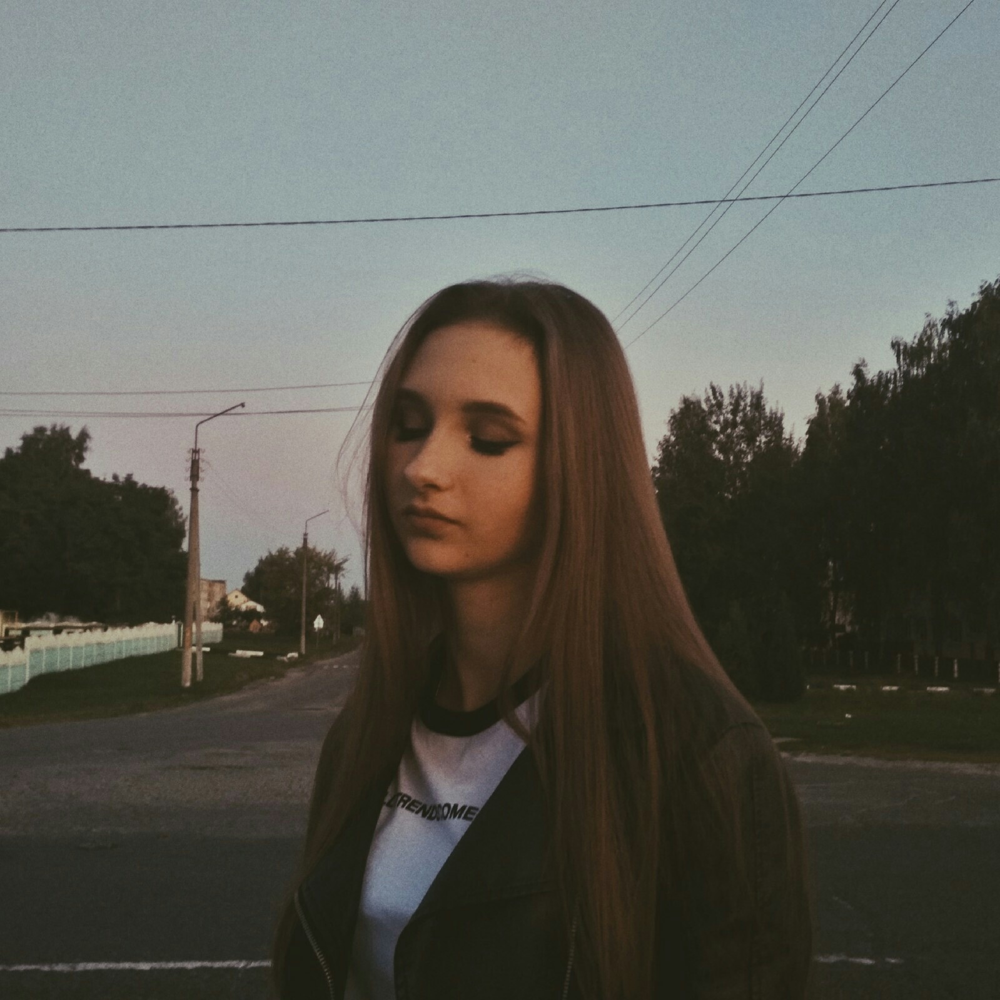

Познакомимся!
УИР-2, 2 курс
Это Настя Юркова! Одна из самых дружелюбных и активных людей в группе. Это тот человек, который всегда найдет подход в общении с любым человеком. В какой-то мере ее значимость в группе приравнивается к положению старосты. P.S. Полина тоже крутая (и Марина) :) Та-а-к... Что же еще написать? Знает, как себя подать. Уверена, что Настя сможет выйти из любой ситуации. Инфа 100%.